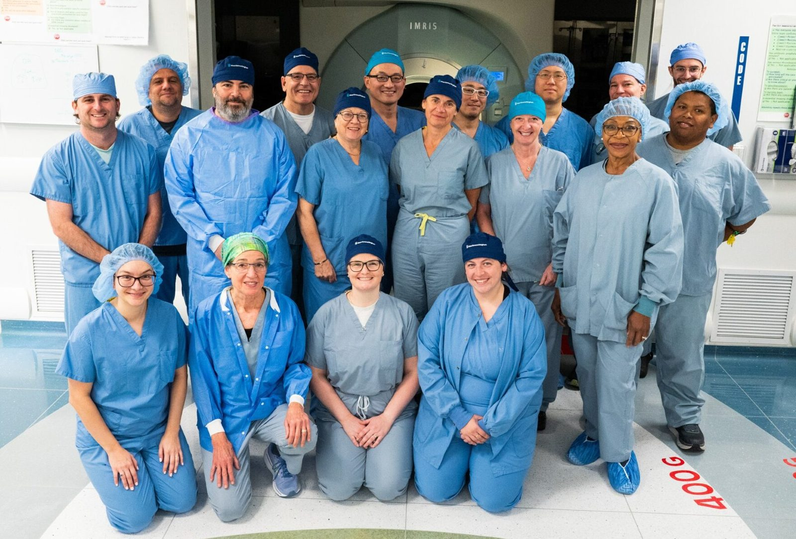
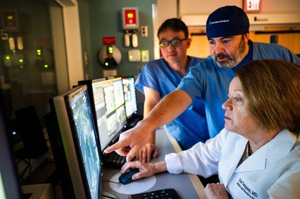
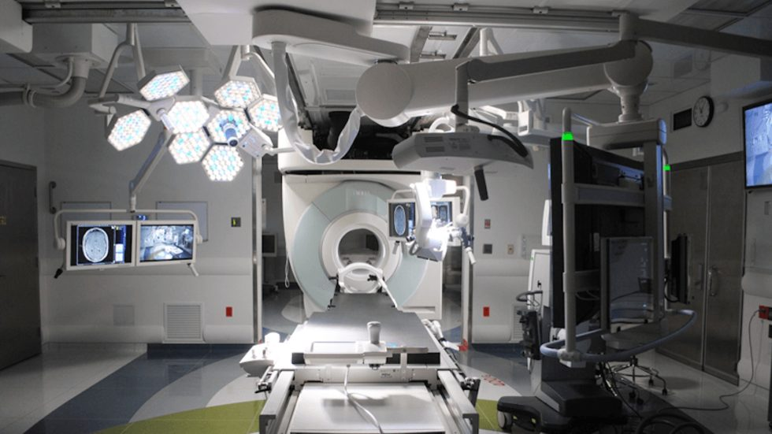
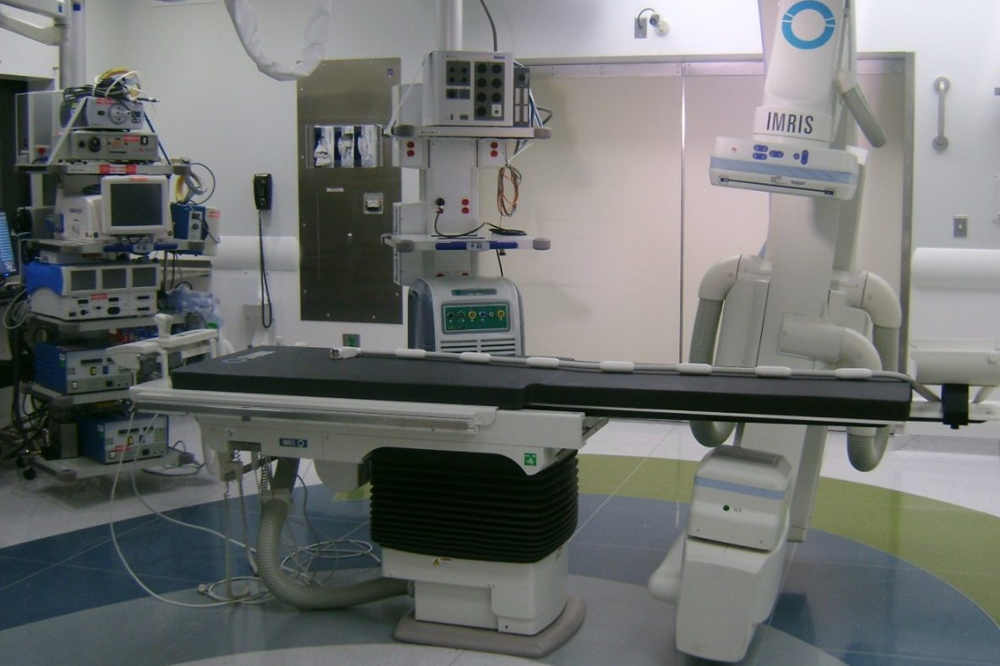
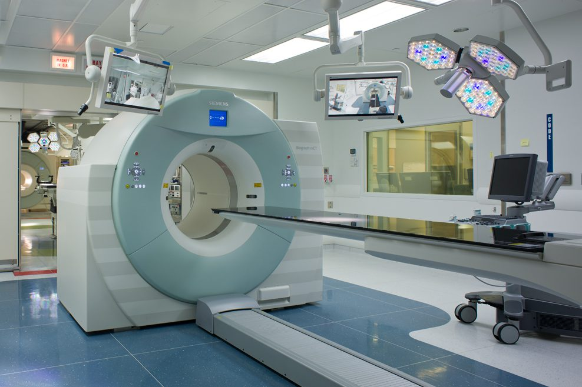

The Advanced Multimodality Image-Guided Operating (AMIGO) suite is a clinical translational testbed for research of the The National Center for Advanced Technologies for Image Guided Therapy (AT-NCIGT) at Brigham and Women’s Hospital (BWH) and Harvard Medical School. NCIGT and AMIGO are funded under the Biomedical Technology Resource Centers Program of the National Institute of Biomedical Imaging and Bioengineering. A unique resource for Image-Guided therapy, AMIGO represents and encourages multidisciplinary cooperation and collaboration among teams of surgeons, interventional radiologists, imaging physicists, computer scientists, biomedical engineers, nurses, and technologists to achieve the common goal of delivering the safest and the most effective state-of-the-art therapy to patients in a technologically advanced and patient-friendly environment.
Launched in 2011, AMIGO is one of the first operating suites in the world with a full array of imaging modalities for use during procedures, enabling less invasive, more effective therapy. Encompassing 5,700 square feet, divided into three separate, yet integrated sterile procedure rooms in which multidisciplinary teams treat patients using multiple imaging modalities. Each room has a separate entrance to the control corridor and support spaces.
MRI ROOM

The Magnetic Resonance Imaging (MRI) room of AMIGO includes a high-performance high-field (3 Tesla) wide-bore (70 cm) MRI scanner (Siemens Magnetom Verio, Erlangen, Germany) integrated with full OR-grade medical gases, MRI-compatible anesthesia delivery and monitoring system, and therapy delivery equipment. The MR scanner is mounted and can traverse on ceiling rails to a fully draped patient on the OR table.
MRI’s exceptional ability to provide detailed anatomical, functional, and metabolic information has made it a valuable technology for guiding the intra-operative removal of brain tumors, and we apply similar image-guidance principles to the removal of breast cancer, prostate cancer, and other malignancies.
Specifically, the AMIGO MRI room is used for:
- laser removal of brain tumors
- cerebrovascular and endovascular interventions
- biopsies
- needle insertion-based procedures, such as prostate brachytherapy (internal radiotherapy)
- minimally invasive removal of soft tissue tumors by using freezing or heating technologie
OPERATING ROOM

The center of the image-guided operating suite, the operating room (OR), is outfitted with a state-of-the-art, electronically controlled operating table. It is mounted with:
- MRI-compatible anesthesia delivery and monitoring systems
- a surgical microscope with near-infrared capability
- surgical navigation systems that track handheld tools or other surgical devices and project images based on the location of the devices
- a ceiling-mounted single plane Siemens Artis Zee angiographic C-Arm X-Ray system
- 3D ultrasound devices
All images and data related to the procedure are collected and prioritized by using video integration technology and then displayed on large LCD monitors that cover the walls of all three rooms in the suite, enabling surgical teams to view all available information at a glance.
Procedures performed in the OR will include open surgeries of the brain and breast, cerebrovascular and endovascular interventions, spine surgery, skull base surgery, and endoscopic and laparoscopic surgeries.
PET/CT ROOM

The inclusion of PET (Positron Emission Tomography) imaging into the suite, along with the use of short half-life isotopes made in our hospital’s cyclotron, is one of the most innovative features of AMIGO. Using this technology, physicians can precisely target tumor tissue before starting a procedure and then verify the complete removal or destruction of tumors by depicting any residual cancer tissue before concluding the procedure. The combined use of MRI and CT with PET enables clinicians to integrate anatomical, functional, and metabolic information to enhance their decision-making during tumor removals.
The PET/CT (Positron Emission Tomography/Computed Tomography) scanner is stationary and fixed to the floor. There is a shuttle system for transferring patients between the PET/CT table for imaging and the OR table for surgery.
MORE ABOUT AMIGO
- Open Source Software for Image Guided Therapy: 3D Slicer. MIT HST Guest Lecture. | Tina Kapur, PhD | May 5, 2015
- Open Source Software for Image Guided Therapy: 3D Slicer. MIT HST Guest Lecture. | Tina Kapur, PhD | May 6, 2014
- Understanding Biomarker Science: from Molecules to Images. Harvard Catalyst Talk. | Tina Kapur, PhD | March 20, 2014
- Gynecologic Brachytherapy in AMIGO: A Collaboration between Radiology and Radiation Oncology. First Monday Seminar, Brigham and Women’s Hospital. | Tina Kapur, PhD | November 5, 2012
- A Review of the First Year of AMIGO. | August 2012
- Advanced Multimodality Image-Guided Operating (AMIGO) Suite Designed to Enhance Procedures and Enable New Interventions. | April 2012
Content carried over from https://ncigt.org/amigo/.